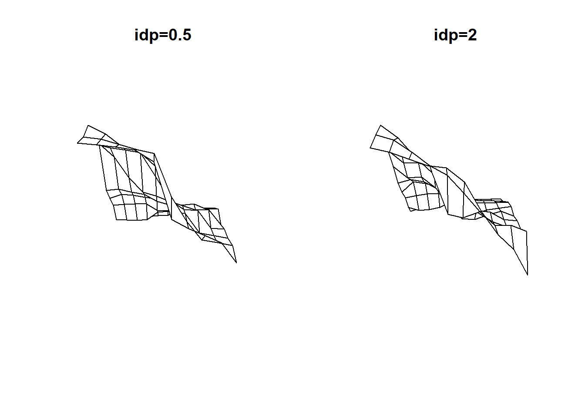

Code
library(terra)
library(spdep)
library(tidyverse)
library(gstat)Carolyn Koehn
Load libraries:
The deterministic \(z = 2x + 3y\) process becomes stochasic with the addition of the \(d\) term: \(z = 2x + 3y + d\). In the example below, \(d\) is pulled from a uniform distribution with range -50 to 50 and results in six very different simulated results.
old-style crs object detected; please recreate object with a recent sf::st_crs()
old-style crs object detected; please recreate object with a recent sf::st_crs()
old-style crs object detected; please recreate object with a recent sf::st_crs()
Moran I test under randomisation
data: s$HR80
weights: lw
Moran I statistic standard deviate = 1.8891, p-value = 0.02944
alternative hypothesis: greater
sample estimates:
Moran I statistic Expectation Variance
0.136277593 -0.015151515 0.006425761 Each cell takes the value of its nearest neighbor point.
# data retrieved from https://www.epa.gov/outdoor-air-quality-data/download-daily-data
aq <- read_csv("/opt/data/data/classexamples/ad_viz_plotval_data_PM25_2024_ID.csv") %>%
st_as_sf(., coords = c("Site Longitude", "Site Latitude"), crs = "EPSG:4326") %>%
st_transform(., crs = "EPSG:8826") %>%
mutate(date = as_date(parse_datetime(Date, "%m/%d/%Y"))) %>%
filter(., date >= 2024-07-01) %>%
filter(., date > "2024-07-01" & date < "2024-07-31")
aq.sum <- aq %>%
group_by(., `Site ID`) %>%
summarise(., meanpm25 = mean(`Daily AQI Value`))
nodes <- st_make_grid(aq.sum,
what = "centers")
dist <- distance(vect(nodes), vect(aq.sum))
nearest <- apply(dist, 1, function(x) which(x == min(x)))
aq.nn <- aq.sum$meanpm25[nearest]
preds <- st_as_sf(nodes)
preds$aq <- aq.nn
preds <- as(preds, "Spatial")
sp::gridded(preds) <- TRUE
preds.rast <- rast(preds)mgsf05 <- gstat(id = "meanpm25", formula = meanpm25~1, data=aq.sum, nmax=7, set=list(idp = 0.5))
mgsf2 <- gstat(id = "meanpm25", formula = meanpm25~1, data=aq.sum, nmax=7, set=list(idp = 2))
interpolate_gstat <- function(model, x, crs, ...) {
v <- st_as_sf(x, coords=c("x", "y"), crs=crs)
p <- predict(model, v, ...)
as.data.frame(p)[,1:2]
}
zsf05 <- interpolate(preds.rast, mgsf05, debug.level=0, fun=interpolate_gstat, crs=crs(preds.rast), index=1)
zsf2 <- interpolate(preds.rast, mgsf2, debug.level=0, fun=interpolate_gstat, crs=crs(preds.rast), index=1)persp can help us visualize smoothness by creating a 3D representation of a raster.

We assessed which raster cells were the most different between the two models.
---
title: "Session 18 code"
author: "Carolyn Koehn"
format: html
---
Load libraries:
```{r}
#| message: false
#| warning: false
library(terra)
library(spdep)
library(tidyverse)
library(gstat)
```
## Stochastic Process
The deterministic $z = 2x + 3y$ process becomes stochasic with the addition of the $d$ term: $z = 2x + 3y + d$. In the example below, $d$ is pulled from a uniform distribution with range -50 to 50 and results in six very different simulated results.
```{r}
x <- rast(nrows = 10, ncols=10, xmin = 0, xmax=10, ymin = 0, ymax=10)
values(x) <- 1
fun <- function(z){
a <- z
d <- runif(ncell(z), -50, 50)
values(a) <- 2 * crds(x)[,1] + 3*crds(x)[,2] + d
return(a)
}
b <- replicate(n=6, fun(z=x), simplify=FALSE)
d <- do.call(c, b)
```
## Moran's I
```{r}
set.seed(2354)
# Load the shapefile
s <- readRDS(url("https://github.com/mgimond/Data/raw/gh-pages/Exercises/fl_hr80.rds"))
# Define the neighbors (use queen case)
nb <- poly2nb(s, queen=TRUE)
# Compute the neighboring average homicide rates
lw <- nb2listw(nb, style="W", zero.policy=TRUE)
#estimate Moran's I
moran.test(s$HR80,lw, alternative="greater")
```
## Nearest Neighbor Interpolation
Each cell takes the value of its nearest neighbor point.
```{r}
#| include: false
aq <- read_csv("C:/Users/carolynkoehn/Documents/HES505_Fall_2024/isdrfall2024/data/ad_viz_plotval_data_PM25_2024_ID.csv") %>%
st_as_sf(., coords = c("Site Longitude", "Site Latitude"), crs = "EPSG:4326") %>%
st_transform(., crs = "EPSG:8826") %>%
mutate(date = as_date(parse_datetime(Date, "%m/%d/%Y"))) %>%
filter(., date >= 2024-07-01) %>%
filter(., date > "2024-07-01" & date < "2024-07-31")
aq.sum <- aq %>%
group_by(., `Site ID`) %>%
summarise(., meanpm25 = mean(`Daily AQI Value`))
nodes <- st_make_grid(aq.sum,
what = "centers")
dist <- distance(vect(nodes), vect(aq.sum))
nearest <- apply(dist, 1, function(x) which(x == min(x)))
aq.nn <- aq.sum$meanpm25[nearest]
preds <- st_as_sf(nodes)
preds$aq <- aq.nn
preds <- as(preds, "Spatial")
sp::gridded(preds) <- TRUE
preds.rast <- rast(preds)
```
```{r}
#| eval: false
# data retrieved from https://www.epa.gov/outdoor-air-quality-data/download-daily-data
aq <- read_csv("/opt/data/data/classexamples/ad_viz_plotval_data_PM25_2024_ID.csv") %>%
st_as_sf(., coords = c("Site Longitude", "Site Latitude"), crs = "EPSG:4326") %>%
st_transform(., crs = "EPSG:8826") %>%
mutate(date = as_date(parse_datetime(Date, "%m/%d/%Y"))) %>%
filter(., date >= 2024-07-01) %>%
filter(., date > "2024-07-01" & date < "2024-07-31")
aq.sum <- aq %>%
group_by(., `Site ID`) %>%
summarise(., meanpm25 = mean(`Daily AQI Value`))
nodes <- st_make_grid(aq.sum,
what = "centers")
dist <- distance(vect(nodes), vect(aq.sum))
nearest <- apply(dist, 1, function(x) which(x == min(x)))
aq.nn <- aq.sum$meanpm25[nearest]
preds <- st_as_sf(nodes)
preds$aq <- aq.nn
preds <- as(preds, "Spatial")
sp::gridded(preds) <- TRUE
preds.rast <- rast(preds)
```
```{r}
nodes_bounds <- st_make_grid(aq.sum,
what = "polygons")
plot(preds.rast)
plot(st_geometry(aq.sum), add=TRUE)
plot(nodes_bounds, add=TRUE)
```
## Inverse Distance Weighting
```{r}
mgsf05 <- gstat(id = "meanpm25", formula = meanpm25~1, data=aq.sum, nmax=7, set=list(idp = 0.5))
mgsf2 <- gstat(id = "meanpm25", formula = meanpm25~1, data=aq.sum, nmax=7, set=list(idp = 2))
interpolate_gstat <- function(model, x, crs, ...) {
v <- st_as_sf(x, coords=c("x", "y"), crs=crs)
p <- predict(model, v, ...)
as.data.frame(p)[,1:2]
}
zsf05 <- interpolate(preds.rast, mgsf05, debug.level=0, fun=interpolate_gstat, crs=crs(preds.rast), index=1)
zsf2 <- interpolate(preds.rast, mgsf2, debug.level=0, fun=interpolate_gstat, crs=crs(preds.rast), index=1)
```
```{r}
par(mfrow=c(1,2))
plot(zsf05, main="idp=0.5")
plot(zsf2, main="idp=2")
```
`persp` can help us visualize smoothness by creating a 3D representation of a raster.
```{r}
par(mfrow=c(1,2))
persp(zsf05,box=FALSE, main="idp=0.5")
persp(zsf2, box=FALSE,main="idp=2")
```
We assessed which raster cells were the most different between the two models.
```{r}
test <- zsf05 - zsf2
plot(test)
```